Dressage Lesson with Meg
I was reminded this weekend that I hadn't updated Miaren's page lately.
We've been taking lessons (mainly dressage) two or three times a week,
so I thought I'd try and grab pictures during one.
Miaren is doing really good. He's a fun ride, although we still have our moments.
The lengthen is coming along nicely, but the canter still needs a lot of work.
This lesson he lugged quite a bit, so I had to learn more options for getting what I want without fighting him.
Not easy, but worth it.
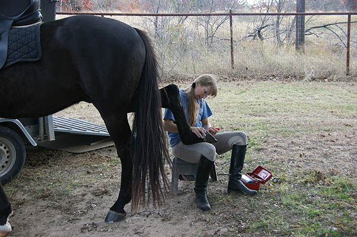
Studs for any ride I plan to canter. They make me feel
more secure and not worry about slipping.
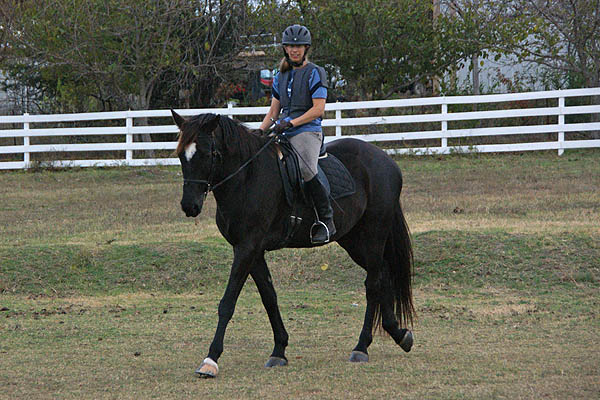Forward is rarely an issue for him. Sometimes staying
in the walk takes tact, but this ride he was feeling lazy and sluggish.
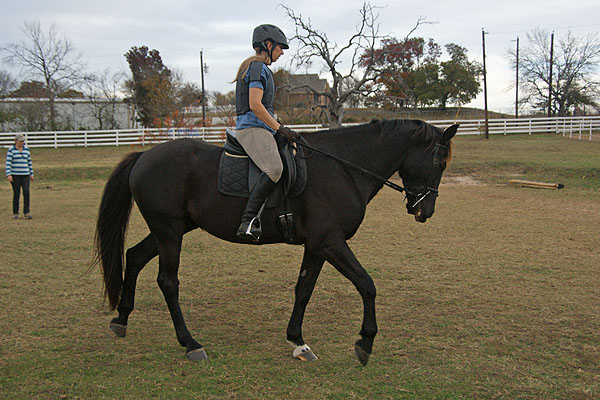
He's expressive with his nose. Softening isn't always his favorite thing to do.
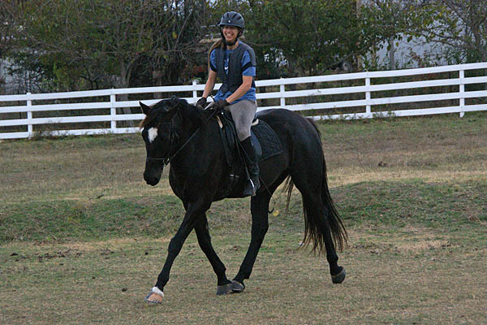 His trot tends to be light and bouncy. I can see
I shouldn't be hunched so much, but I can also see what I usually feel in the saddle.
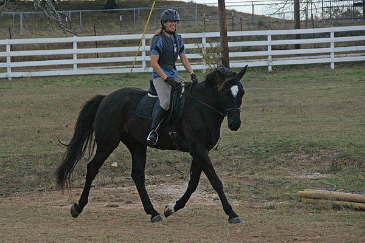
He can be too bendy, and use that to hollow and not reach over the top. Definitely
a work in progress. Lately he's shown that if I can keep my hands steadier at the
trot, he can reach through and be steadier. What a concept.
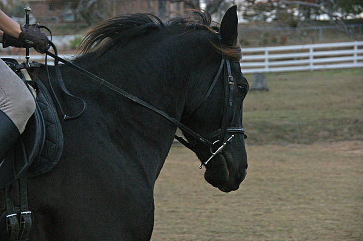
Sometimes I choke up too much. I forget he needs the length of rein to reach forward,
and I get nervous when he gets rushy.
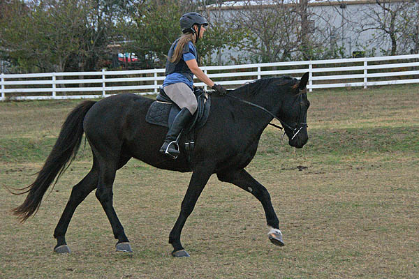Bending and circles are so useful for both of us. The help
me relax, and let him focus while getting less bored.
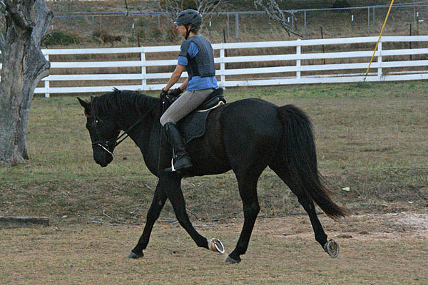
It looks a bit on the forehand, but his underneck is soft and he's more through.
Here's where my trainer wanted me to try pushing him on to get the backend more
engaged. I didn't really have the strength that night.
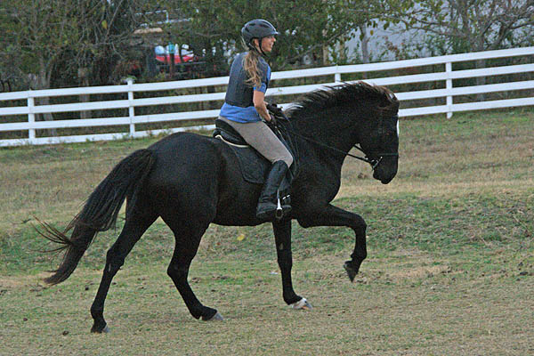
A little canter to see if that would wake him up.
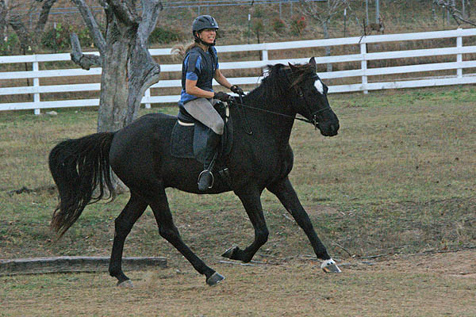
Gritting my teeth as the nose went out and I had little to do to fix it.
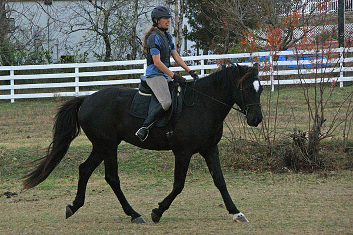
Not a bad frame, but he was in a 'just good enough' mode last night. And how many
years have I been working on that right leg?

Definitely some bracing going on from both sides. (but the right leg has settled
down a bit)
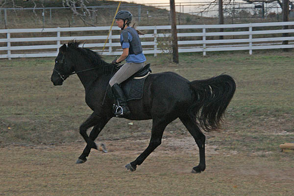
Sitting in the saddle and keeping my shoulders back would probably help. Sometimes
I'm just thinking of keeping that canter going, and balancing for the downhill slope
of the arena.
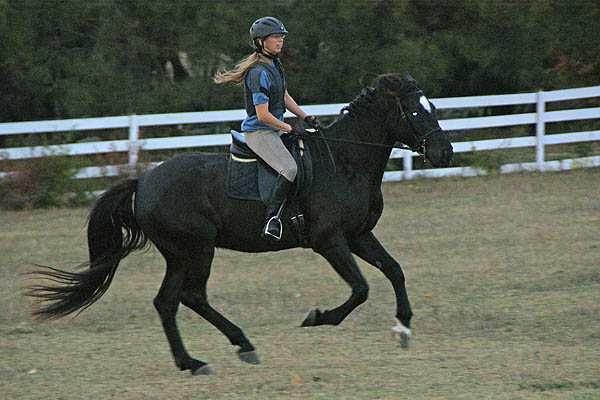
I think better with my body. There was a lot of lifting in this canter. It felt
fun, even though now I see it's not correct.
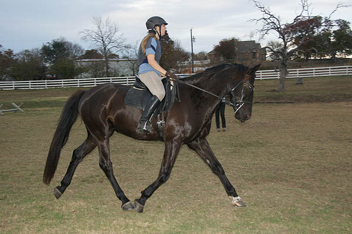
Well, it did wake him up.
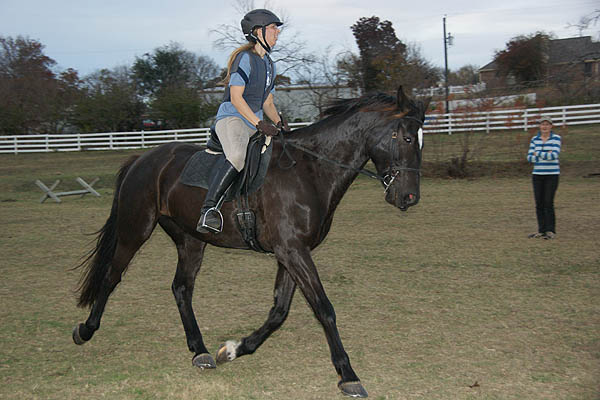
He looks bigger in pictures than I feel when I'm on him.
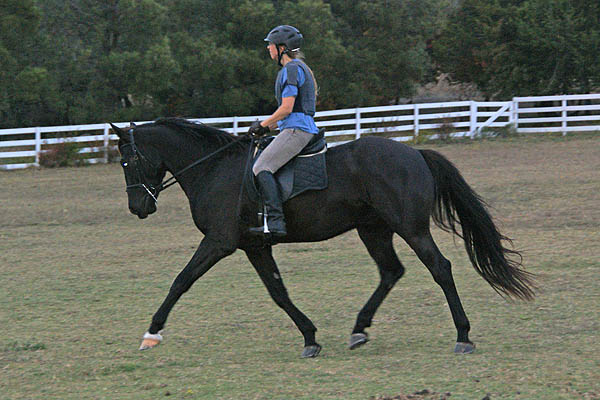
Now he's starting to work. Still not engaged behind like he can be, but some energy
there to work with.
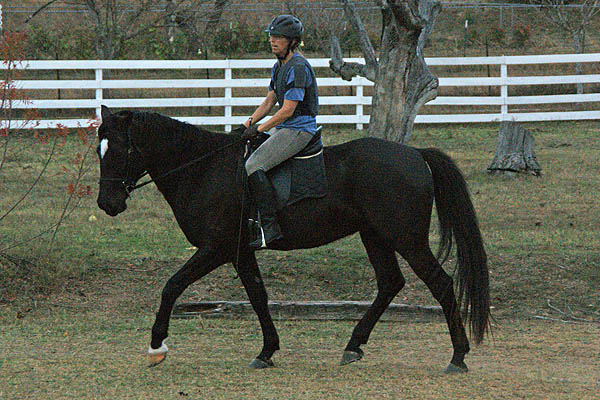
And both of us showing that we're getting tired. He could tell I'd been sick all
week, and was probably feeding off that.
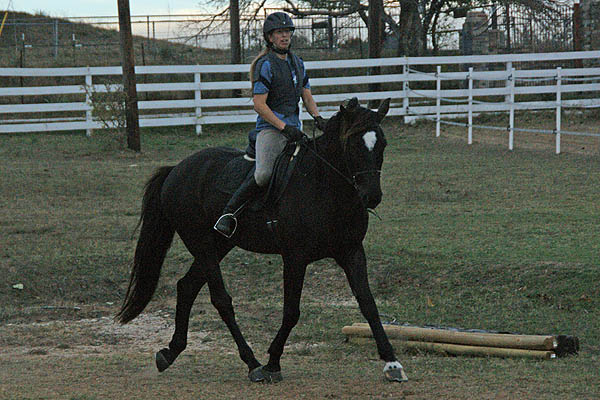
Stupid right leg. These pictures are a good reminder that it's not listening to
me if I'm not talking to it.
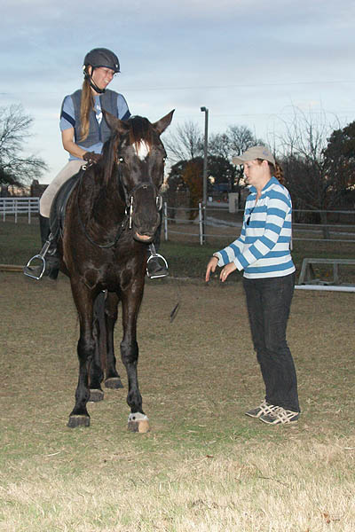
Silly horse. He looks so elegant with that lower lip drooping down. He learned that
from Emma.
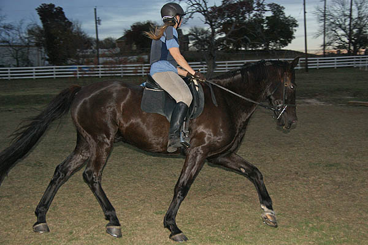
And back to work. A little cob action with those knees.
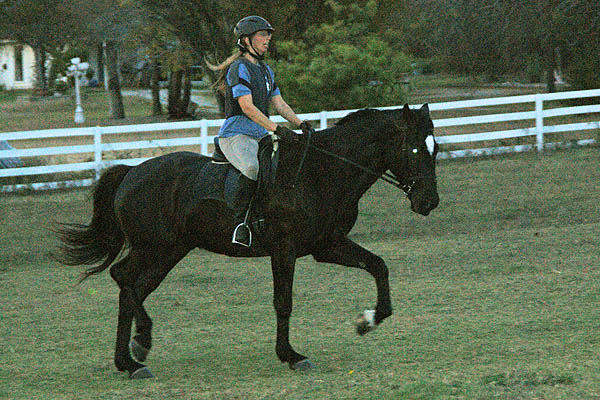Across the diagonal doing a lengthen. Not easy to grab
the right moment in the dark. At least I can see that I'm upright, his neck is longer
and his nose isn't poked out. It's such a cool feeling.
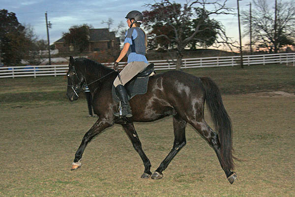
The other way, just straightening out to start the lengthen. Hopefully in the next
stride his neck lengthened like in the last picture. It's hard to get it all right.
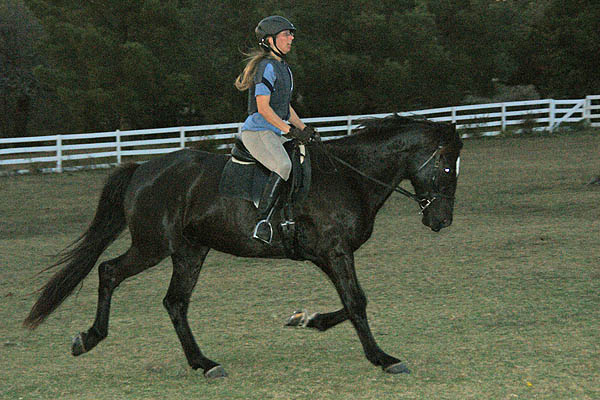One more try. Again I'm pleased with my position (although
my mouth could be shut). It looks like doing the lengthen, he has to go more correctly
over the top to get that flying feeling to work through his back. Maybe we'll try
this in daylight next time to see if we can get a good shot.